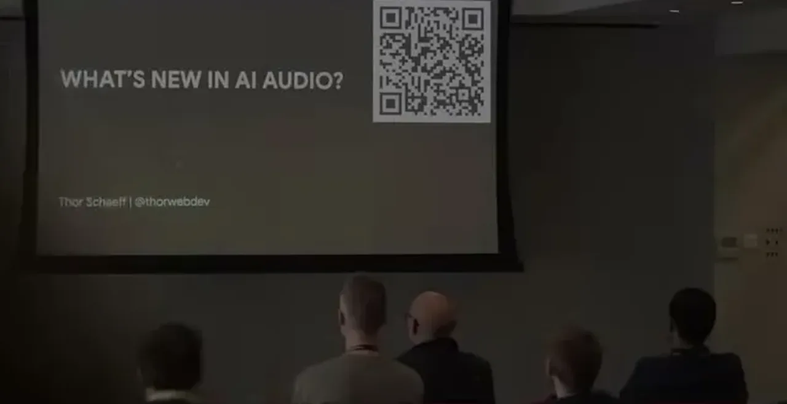
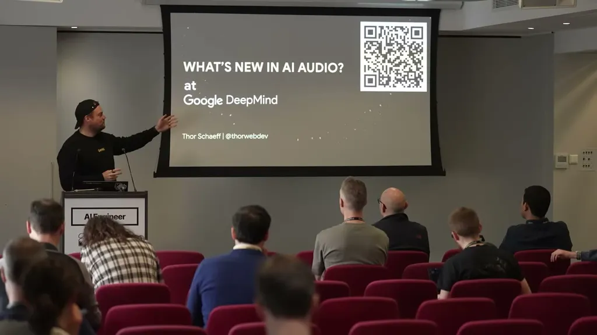
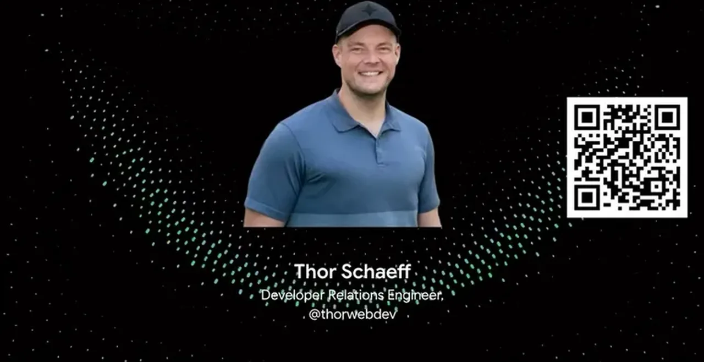
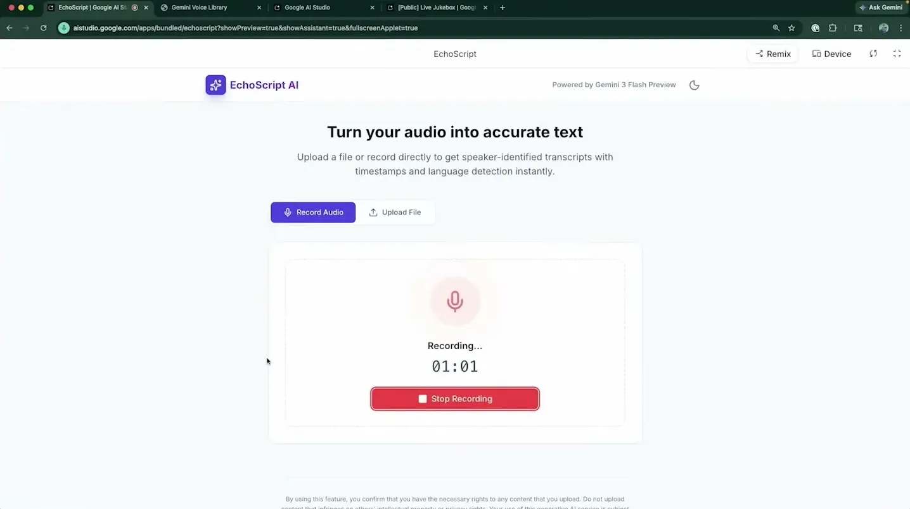
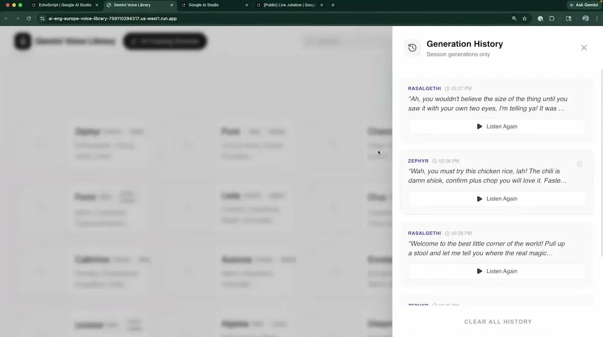
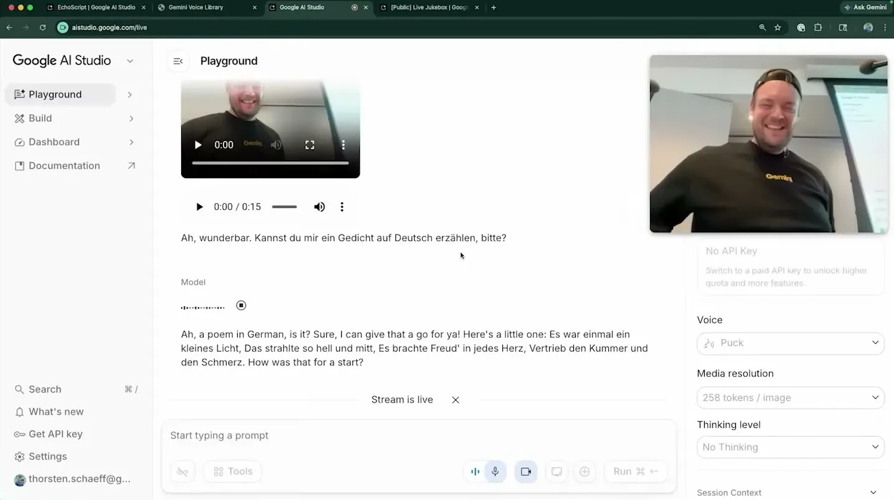
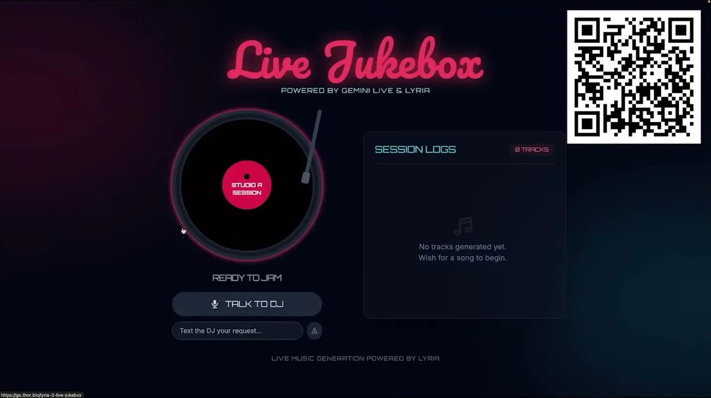
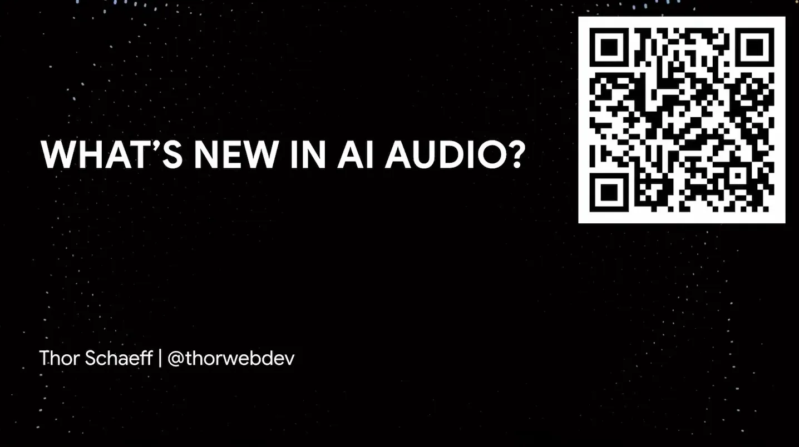
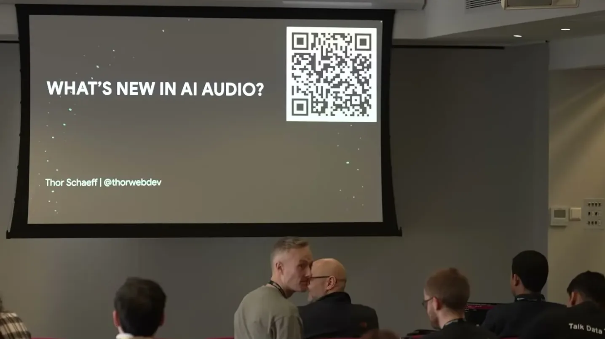

Tours Google DeepMind's current audio product line (EchoScript transcription/diarization, ~30 directable base TTS voices, Gemini 3
Four Gemini audio products share one input-to-output shape: understanding in, structured or generated audio out, with Live able to call Lyra as a tool mid-conversation (ours).
“our goal is to build models that deeply comprehend, richly transcribe and robustly reason through audio”
said at 03:39“we can extract a lot of information out of the audio within one single, you know, request to the model or one single API request if we're using the API”
said at 04:42“in in in Gemini, you have, you know, just I think it's like 30-ish sort of base voices”
said at 07:51“You can ingest text, audio, video in real time through a web socket connection and then you get real-time audio response back as well as kind of text transcript of that”
said at 11:59“especially in the audio space, benchmarks, you know, can't really trust them”
said at 12:32“you're basically just ingesting video frames in addition to the audio at a maximum frame rate of one frame per second at the moment”
said at 15:05“There's a Lyra 3 clip which is a 30-second kind of jingle genera- generation model and then a Lyra 3 Pro is the full-length uh song generation model”
said at 16:18The most transferable idea for building voice products is treating voice direction like acting notes (audio profile + scene + director's note) fed into a small base-voice set, rather than shopping a large fixed voice catalog -- worth testing against other providers' voice-cloning-heavy approaches for cost and consistency (ours).









| Stance | Claim | t |
|---|---|---|
| asserts | DeepMind's stated goal for audio understanding models is deep comprehension, rich transcription, and robust reasoning through audio. | 03:39 |
| asserts | EchoScript extracts structured information like speaker names, timestamps, language, and emotion from audio in a single API request. | 04:42 |
| asserts | Gemini's speech generation offers around 30 base voices that get directed into specific personas via prompting rather than a large pre-built voice library. | 07:51 |
| asserts | Gemini 3.1 Flash Live ingests real-time text, audio, and video over a websocket and returns real-time audio plus a text transcript. | 11:59 |
| warns | The speaker cautions that benchmarks in the audio space generally can't be trusted. | 12:32 |
| asserts | Live screen/video ingestion in the demo is capped at a maximum of one frame per second. | 15:05 |
| asserts | Lyra 3 splits into a Clip variant for roughly 30-second jingles and a Pro variant for full-length songs. | 16:18 |
Machine-readable copy embedded in this page (script#ontology) and in the corpus ontology.